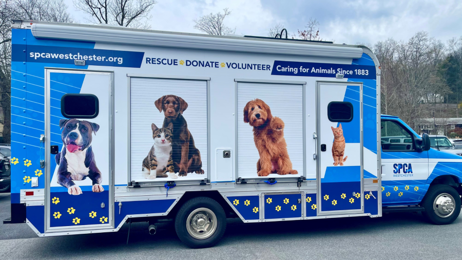

Una camioneta equipada para salvar vidas en cualquier rincón de la Provincia de Buenos Aires.

Hoy respondemos rescates de emergencia con vehículos particulares de voluntarios, lo que nos limita enormemente. Muchas veces no podemos llegar a tiempo a zonas alejadas o no tenemos el equipo necesario para intervenir con seguridad.
Con este proyecto buscamos equipar una camioneta exclusiva para rescates: con jaulas de transporte, botiquín veterinario, collarines de seguridad y GPS para coordinar operativos.
Una unidad móvil dedicada nos permitiría triplicar la cantidad de rescates mensuales, llegar a casos de alto riesgo (animales atrapados, accidentes viales, maltrato) y coordinar mejor con otras organizaciones de la zona.
Este proyecto se financia 100% con donaciones. Cada peso suma para llegar a la meta de $1.500.000 que necesitamos para adquirir y equipar el vehículo.
Estado
NuevoProgreso de financiamiento
$450.000 recaudados de $1.500.000
Zona de impacto
Provincia de Buenos Aires
Equipo
8 voluntarios de rescate